Documentación técnica y avances de desarrollo de No Time to Doubt, nuestro videojuego de terror y suspenso psicológico para Realidad Virtual en Unity 6. Aquí explicamos la arquitectura del código, la creación del escenario del bosque y la cabaña, y los ajustes clave de optimización en visores VR.
Programación y Sistemas
Leonardo Lozano
Código en C#, eventos con Action y controles para VR y PC
Nivel, Arte y Optimización
Leonardo García
Diseño del terreno, luz con Light Probes y ajustes para VR
Meta de Rendimiento VR
72 — 90 FPS
Terreno ligero (257x257) y niebla optimizada
Materia y Carrera
Games Engines 2
Diseño Digital de Medios Interactivos (UACJ)
Visión General[REPASO DEL AVANCE]
01. ¿De qué trata el proyecto y qué logramos?
En este avance nos enfocamos en tener la primera zona jugable en Unity 6 (URP): un bosque oscuro con una cabaña abandonada, asegurándonos de que el juego no dé tirones en las gafas de realidad virtual y que el código quede bien ordenado para seguir agregando mecánicas sin romper nada.
[CONCEPTO DEL JUEGO]VR TERROR // AMBIENTACIÓN
Concepto: No Time to Doubt
El jugador aparece en medio de un bosque denso y oscuro delimitado por una niebla espesa, con el objetivo de explorar una cabaña abandonada. Al ser un juego en primera persona para Realidad Virtual, cuidamos dos prioridades: que la atmósfera dé una sensación constante de suspenso, y que los gráficos y el movimiento se sientan cómodos para evitar mareos (cinetosis).
Leonardo Lozano[CÓDIGO // SISTEMAS EN C#]
02. Programación, Arquitectura de Código y Controles VR/PC
Separamos los scripts para que no dependieran unos de otros, cambiamos la forma en que funcionan los objetos para que la linterna no diera problemas al apuntar, y migramos los controles al nuevo Input System para poder probar tanto en visores VR como con teclado y mouse en PC.
[ESTRUCTURA DE CÓDIGO]C# EVENTS & ACTIONS
Separar el código con eventos (Patrón Observador)
En lugar de que un script tenga que buscar y depender directamente de los demás, usamos eventos con Action de C#. Cuando el jugador ataca, el script simplemente avisa que atacó; el Animator o el sonido escuchan esa señal y reaccionan por su cuenta, sin que los códigos estén pegados entre sí.
Problema que teníamos
Los scripts JugadorAtaque, SaludEnemigo y las animaciones estaban muy acoplados. Si cambiábamos algo en un script o faltaba una referencia, salía error y se trababa todo.
Cómo lo solucionamos
Creamos el evento OnAtaqueSolicitado. El script de animaciones lo escucha y reproduce la animación cuando toca, sin que el código de ataque tenga que mandarlo a llamar directamente.
JugadorAtaque.cs (Fragmento Real del Proyecto)
// Definimos el evento con Action de C# para avisar sin acoplar scriptspublic eventAction OnAtaqueSolicitado;
voidStart()
{
controlArma = GetComponent<AgarrarArma>();
}
voidUpdate()
{
if (controlArma != null && controlArma.tieneArma)
{
return;
}
if (Time.time >= tiempoSiguienteAtaque)
{
if (Input.GetButtonDown("Fire1"))
{
Golpear();
tiempoSiguienteAtaque = Time.time + tiempoEntreAtaques;
}
}
}
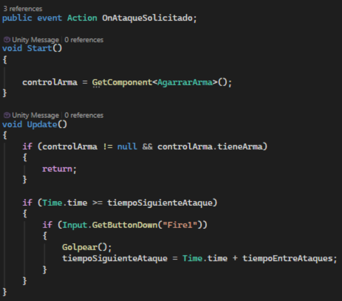
Captura de código: Eventos y Patrón ObservadorAmpliar
[OBJETOS MODULARES]DATOSARMA.CS // BOOLEANOS
Objetos modulares con booleanos: solución al problema de la linterna
Tuvimos un problema con la linterna: como el código anterior la condicionaba a un tipo de arma específico, no nos permitía levantar la mano para alumbrar hacia el frente. La solución fue cambiar a un sistema donde cada objeto define qué puede hacer y no qué tipo de objeto es.
Problema que teníamos
El código dependía de TipoArma. Como la linterna es una herramienta y no un arma de fuego ni cuerpo a cuerpo, el personaje no levantaba la mano para apuntar la luz al caminar por el bosque.
Cómo lo solucionamos
En DatosArma pusimos casillas booleanas: puedeApuntar, puedeDisparar, puedeAtacarMelee y componente de luz. Así, la linterna solo activa puedeApuntar = true y funciona de inmediato, sin tener que hacer scripts separados para cada cosa.
DatosArma.cs (Sistema Universal con Bools)
usingUnityEngine;
public enumTipoArma { DeFuego, CuerpoACuerpo, Herramienta }
public classDatosArma : MonoBehaviour
{
publicTipoArma tipoArma;
[Header("Capacidades del Objeto")]
public bool puedeApuntar = true; // Si es true, la mano se levantapublic bool puedeDisparar = false; // Si es true, usa municiónpublic bool puedeAtacarMelee = false; // Si es true, da golpe cuerpo a cuerpo
[Header("Configuración de Linterna (Opcional)")]
publicLight componenteLuz;
[Header("Estadísticas (Si aplica)")]
public int dano = 10;
public float rangoAtaque = 2f;
}
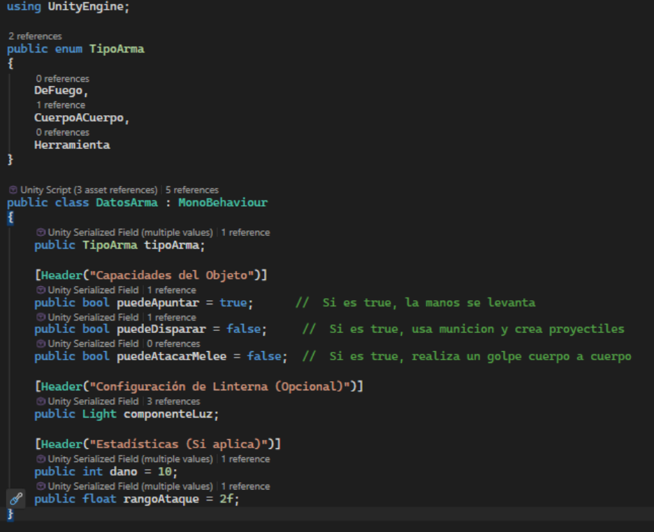
Estructura de DatosArma.csAmpliar
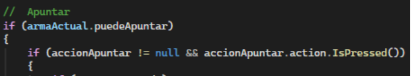
Condición de apuntado modularAmpliar
[CONTROLES VR Y PC]UNITY INPUT SYSTEM
Nuevo Input System: jugar tanto en PC como en visores VR
Cambiamos la detección de clics tradicionales de Input.GetMouse al nuevo Input System de Unity con InputActionReference. Esto nos permite recibir las entradas del ratón de una computadora o el botón de agarre (Grip) de un mando de Realidad Virtual sin tener que cambiar el código según la plataforma.
Detalle a tomar en cuenta
En el nuevo sistema no basta con declarar las variables; si no se "enciende" la escucha de los botones en el momento correcto, el juego ignora las pulsaciones.
Uso de OnEnable y OnDisable
Activamos la escucha de los botones dentro de OnEnable() y la apagamos en OnDisable(). Con esto y la variable armaActual.puedeApuntar logramos un control universal de mandos.
ControladorVR.cs (Input Actions y OnEnable)
// Variables de entrada universales para mandos VR y PCpublicInputActionReference accionDisparar;
publicInputActionReference accionApuntar;
publicInputActionReference accionRecargar;
private voidOnEnable()
{
accionDisparar?.action.Enable();
accionApuntar?.action.Enable();
accionRecargar?.action.Enable();
}
private voidOnDisable()
{
accionDisparar?.action.Disable();
accionApuntar?.action.Disable();
accionRecargar?.action.Disable();
}
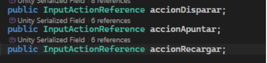
Declaración de InputActionReferenceAmpliar
[FÍSICAS Y MOVIMIENTO]RIGIDBODY // DIRECCIÓN RELATIVA
Caminar según la cabeza y evitar caídas con Rigidbody
Para mover al personaje en VR usamos un componente Rigidbody con restricciones de rotación (FreezeRotation), evitando que la cápsula del jugador tropiece o se incline al caminar por desniveles del terreno, lo cual provocaría mareos inmediatos en las gafas.
Componente
Ajuste realizado
Para qué sirve en VR
Restricciones de Rigidbody
FreezeRotation en X, Y, Z
Mantiene al jugador derecho en todo momento, evitando que el cuerpo se ladee o caiga al chocar con piedras o ramas.
Dirección de Movimiento
Vector normalizado sin eje Y
Hace que el personaje camine hacia donde está apuntando la cabeza (cámara), pero sin levantarse del suelo si voltea a ver hacia arriba.
Eventos de Locomoción
SiVelocidadCambiada
Avisa a otros sistemas cuando el jugador se está moviendo, para activar el sonido de los pasos sin ensuciar el código de físicas.
[ANIMACIONES & MÁQUINAS DE ESTADO]UNITY ANIMATOR // ANY STATE
Control de animaciones: respuesta inmediata con Any State (Jugador y Minion)
Configuramos y desacoplamos el flujo de animaciones tanto para el jugador como para el enemigo tipo Minion en el Animator Controller de Unity. Mediante transiciones originadas desde Any State garantizamos que las acciones críticas no queden bloqueadas esperando a que termine un ciclo de reposo o caminado.
Problema de latencia en animaciones
Si las animaciones de ataque o de muerte solo transicionan desde el estado Idle o Caminar, presionar el gatillo o recibir daño fatal generaba un retraso notable mientras se completaba la animación en curso, arruinando la inmediatez en VR.
Implementación con Any State
En el jugador conectamos Any State → Animaciones_Pegar para que en cualquier estado se ejecute el golpe al instante al pulsar el clic o gatillo VR. En el Minion, conectamos Any State → Muerte para que su eliminación se dispare en cualquier milisegundo sin depender de su estado de patrulla o ataque.
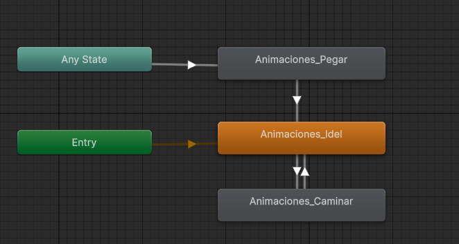
Animator del Jugador: Transición Any State → Animaciones_Pegar, Idle y CaminarAmpliar
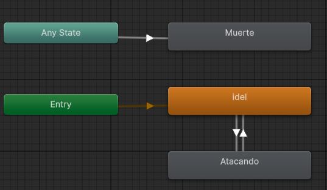
Animator Enemigo Minion: Any State → Muerte y ciclo de Idle / AtacandoAmpliar
Controlador de Sonidos modular y Canvas HUD in-game
Implementamos el script centralizado ControladorSonidosJugador que responde a los eventos y acciones del personaje, asignando clips de audio dedicados para cada interacción física o de combate. Asimismo, estructuramos el Canvas in-game con retroalimentación visual no invasiva de munición, mira y notificaciones del sistema.
Módulo / Sonido
Configuración & Clip
Propósito de Inmersión
Sonido Ataque / Disparo
Golpe // Revolver shoot
Feedback auditivo inmediato al accionar el gatillo en VR o ratón en PC.
Sonido Paso
Footsteps hollow wood (Intervalo: 1)
Pasos espaciados sincrónicamente con el evento de locomoción del Rigidbody.
Sonido Respiración
RespiraAgitado
Intensifica la tensión y ambientación de terror psicológico según el esfuerzo o peligro.
Sonido Recoger
Item Pick up (Counter Strike)
Confirmación sonora al agarrar llaves, munición o el arma del escenario.
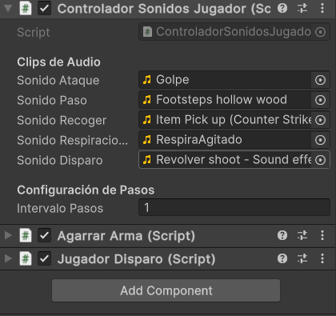
Inspector: ControladorSonidosJugador.cs con clips de ataque, pasos, munición y respiraciónAmpliar
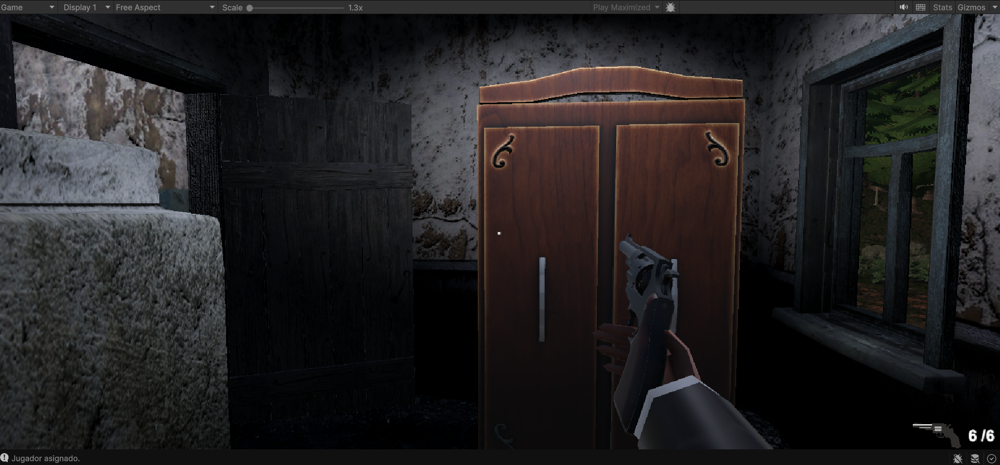
Screenshot in-game: Canvas de munición (6/6), retícula de apuntado y perspectiva del armaAmpliar
Leonardo García[ESCENARIO // ILUMINACIÓN & VR]
03. Diseño de Nivel, Arte, Iluminación y Ajustes de VR
Esculpimos el terreno desde cero con herramientas de Terrain, horneamos las luces con Light Probes para no sobrecargar el visor, creamos una niebla de bajo costo con partículas y calibramos la distancia de dibujado para mantener los cuadros por segundo estables.
[DISEÑO DEL TERRENO]UNITY 6 TERRAIN TOOLS
Construcción y escultura del terreno
Diseñamos el terreno partiendo de cero con las herramientas de Terrain en Unity 6, reemplazando cuadrículas planas y genéricas por un mapa a la medida. Esculpimos colinas, zanjas y claros boscosos, y pintamos capas de texturas de pasto, tierra y caminos de terracería que guían naturalmente hacia la cabaña.
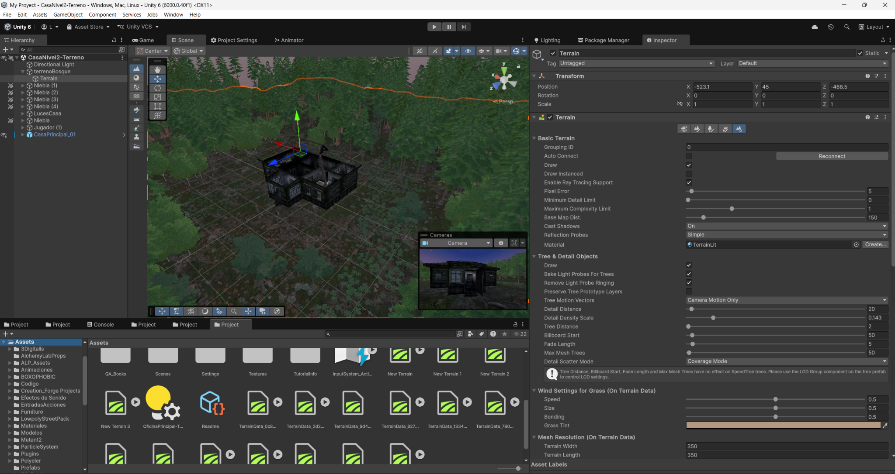
Inspector del terreno y escena en Unity 6Ampliar
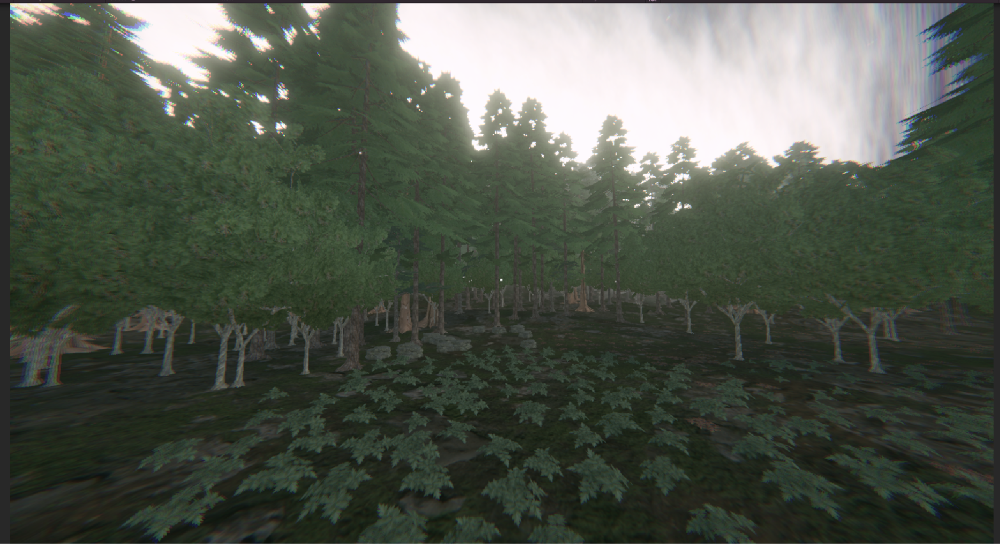
Composición de vegetación y nieblaAmpliar
[RENDIMIENTO EN VR]AJUSTES DEL TERRENO
Optimización del terreno para mantener los 72-90 FPS
En Realidad Virtual es fundamental mantener una tasa alta y constante de cuadros por segundo, ya que cualquier tirón hace que la persona se sienta mareada. Para lograrlo, ajustamos los parámetros del terreno, texturas y vegetación para que consumieran lo mínimo sin perder la ambientación.
Parámetro
Valor por defecto
Ajuste aplicado para VR
Beneficio en el juego
Resolución del Heightmap
1025 x 1025
257 x 257
Reduce drásticamente el peso de la malla del suelo y acelera el cálculo de colisiones.
Resolución de Texturas Base
2048 x 2048
512 x 512
Ahorra mucha memoria de video (VRAM) en las gafas de realidad virtual.
Distancia de Árboles y Detalle
100m a 250m
Detalle: 20m | Árboles: 2m
Los árboles lejanos no se dibujan fuera de lo que tapa la niebla, ahorrando procesamiento.
Medidas del Mapa
1000m x 1000m
350m x 350m
Espacio medido y enfocado a la exploración de la cabaña y sus alrededores.
Conexión Automática de Terrenos
Activado
Desactivado
Evita que Unity gaste recursos revisando si hay otros terrenos alrededor.
[ILUMINACIÓN HORNEADA]LIGHT PROBE GROUPS
Iluminación con Light Probes (sin gastar en luces en tiempo real)
Poner muchas luces en tiempo real en VR hace que el juego vaya lento. Para evitarlo, horneamos las luces fijas (Light Bake) y colocamos una red de Light Probe Groups adentro y afuera de la cabaña. Con esto, cuando el jugador o la linterna se mueven por las habitaciones, reciben la luz y las sombras del entorno sin castigar los cuadros por segundo.
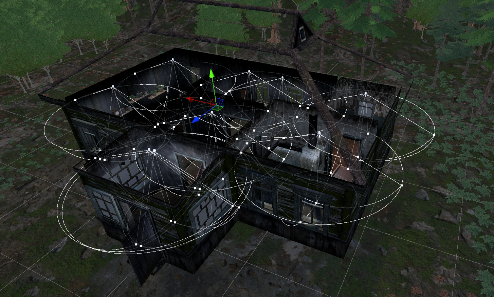
Red de Light Probes en la cabañaAmpliar
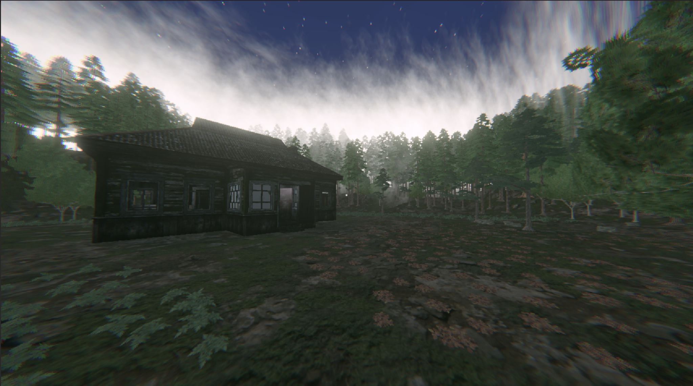
Cabaña en el claro con niebla perimetralAmpliar
[ATMÓSFERA Y ARREGLOS]PARTICLE SYSTEM // URP LIT
Niebla con sistema de partículas y arreglo de materiales rosados
La niebla volumétrica común consume demasiado en visores VR. Para lograr una atmósfera lúgubre de bajo costo, usamos un Particle System en forma de caja grande alrededor del bosque: simula una niebla estancada y espesa que delimita el nivel y casi no consume recursos.
Problema de materiales rosados
Varios modelos 3D que trajimos (como el buzón de la entrada) se veían de color rosa/magenta porque venían preparados para el motor anterior de Unity (Built-in) y no eran compatibles con URP.
Conversión a URP Lit
Convertimos los materiales al shader Universal Render Pipeline/Lit, recuperando las texturas correctas de madera y metal para que se vean bien integradas con la escena.
[COLOR Y NARRATIVA]GLOBAL VOLUME // LUT 16x16
Post-procesado (LUT) y ritmo del nivel
Configuramos un Global Volume con un filtro LUT (Look-Up Table) de 16x16 para teñir la imagen de tonos fríos y oscuros acordes a un thriller psicológico. También agregamos un toque suave de viñeta y aberración cromática en la cámara del jugador, cuidando que la escala se vea natural y no provoque sensación de mareo al usar el visor.
Galería In-Game[ESCENARIOS & MECÁNICAS]
04. Galería: Cabaña, Objetivos y Montaje en Unity
Capturas directas dentro del juego y del editor en Unity: ambientación, mecánicas de interacción, objetivos en pantalla y el montaje detrás de cámaras de las luces y la estructura del nivel.
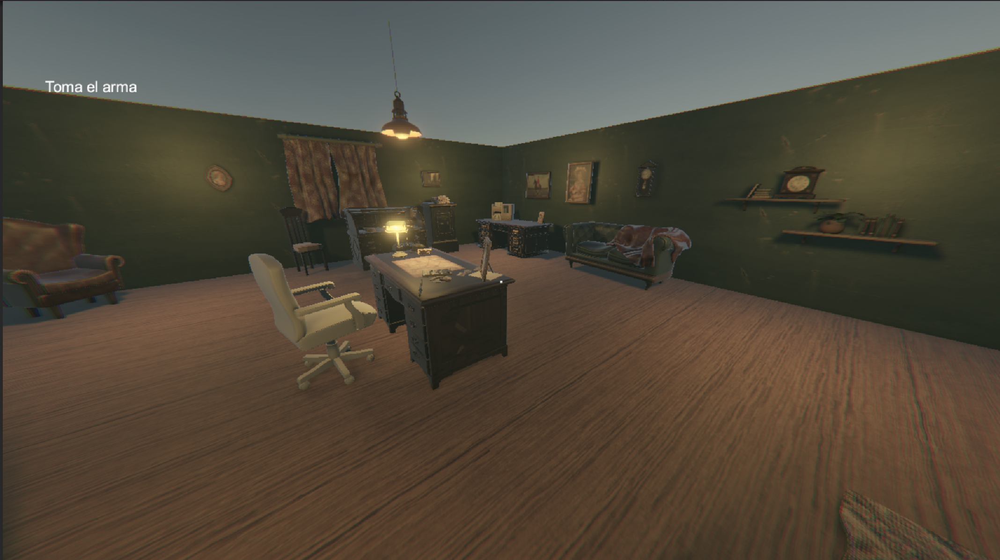
Despacho Principal
Objetivo: "Toma el arma" — Mobiliario e iluminación
Ampliar
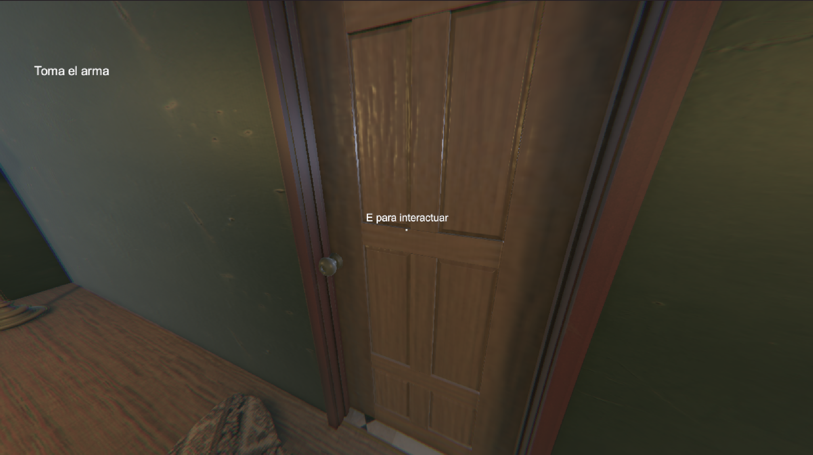
Interacción con Puertas
Mecánica en pantalla: "E para interactuar"
Ampliar
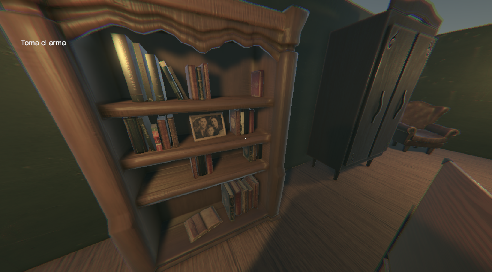
Detalle Narrativo
Librero con foto familiar y libros antiguos
Ampliar
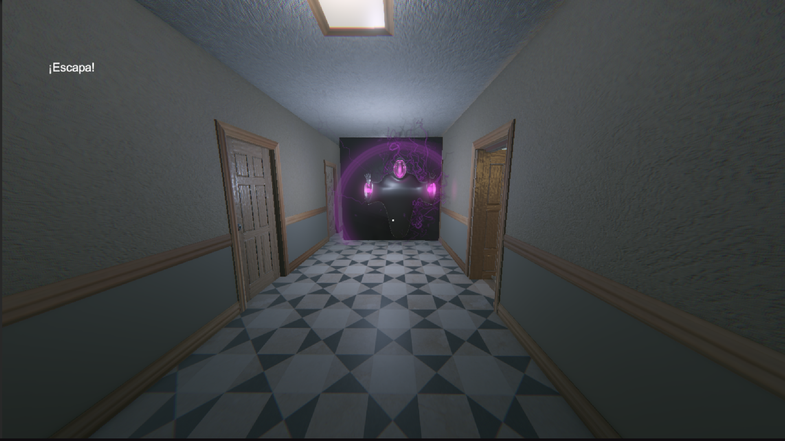
Aparición de la Entidad
Objetivo: "¡Escapa!" — Pasillo y enemigo espectral
Ampliar
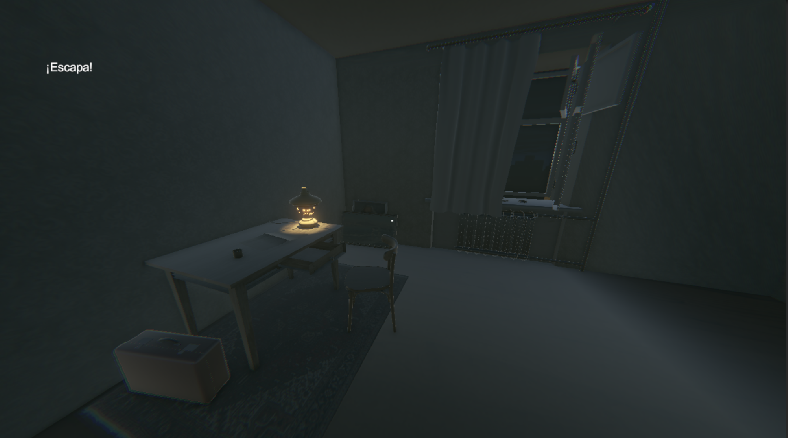
Habitación y Luz Tenue
Objetivo: "¡Escapa!" — Lámpara y ventana nocturna
Ampliar
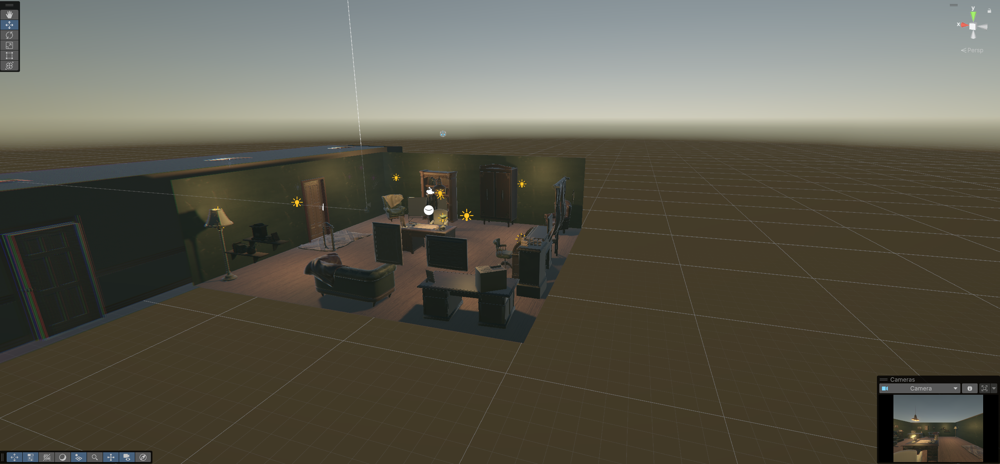
Montaje de Luces: Despacho
Scene View — Distribución de luces Point Light
Ampliar
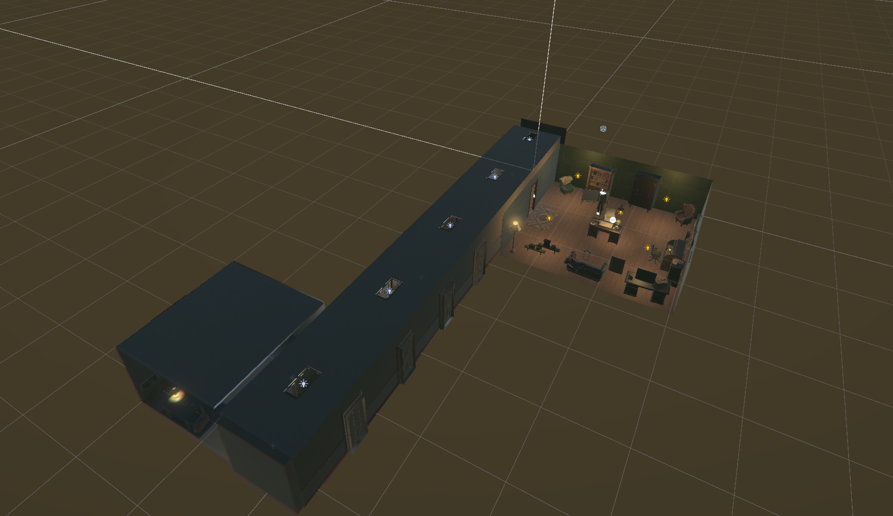
Estructura del Nivel (Vista Aérea)
Distribución: Despacho, pasillo largo y habitación
Ampliar
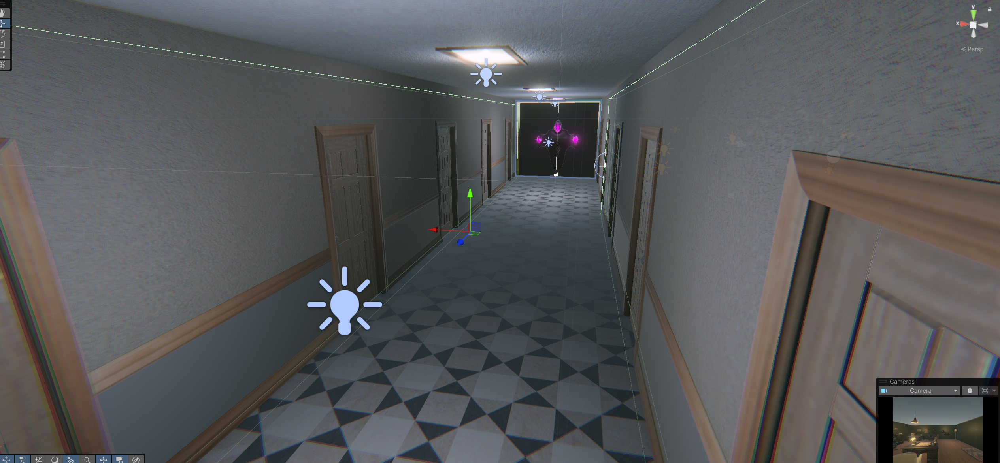
Iluminación del Pasillo
Scene View — Gizmos de luz y colocación del enemigo
Ampliar
HUD & Perspectiva In-Game
Canvas de munición (6/6), retícula y empuñadura del arma
Ampliar
Demostración en Video[GAMEPLAY // BOSQUE & CABAÑA]
05. Video del Nivel Jugable (Gameplay)
Aquí se puede ver el recorrido por el bosque con la linterna encendida, la niebla delimitando el camino y la llegada a la cabaña abandonada.